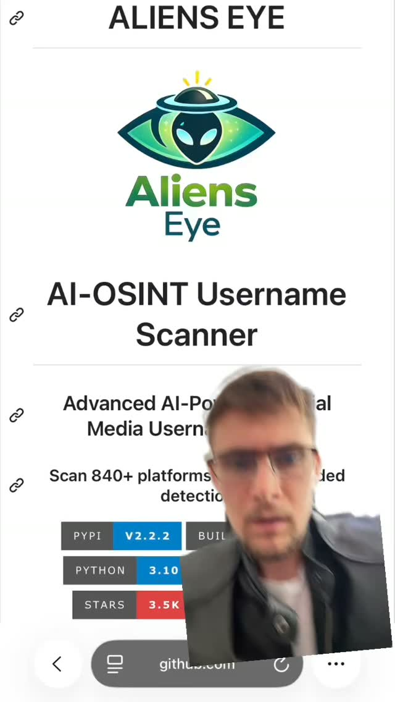
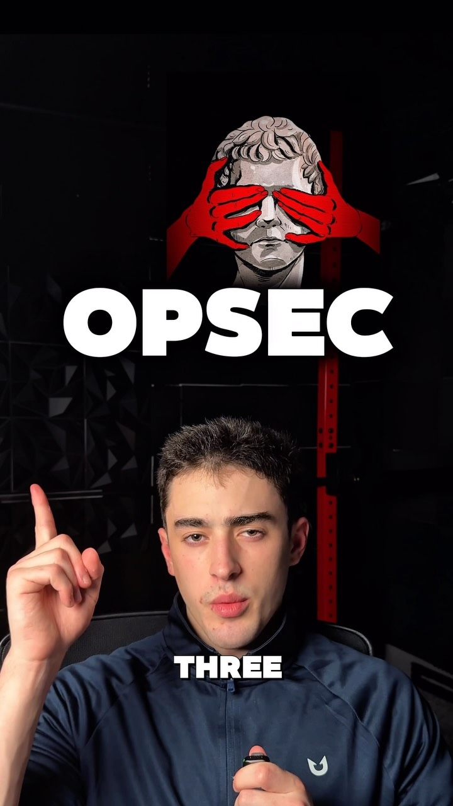

Dox Yourself First — a scheduled agent that runs the OSINT kit on you
Try It — Action Sketch
Write one skill that runs Sherlock (via uv) and an email-enumeration tool against your own handles and addresses, storing results in a table keyed by date Add a photo pass: send your last 20 public images to a geolocation model and flag any that resolve within a few km of home Schedule it weekly, diff against last run, and have the agent draft data-broker opt-out requests from the checklist for each new hit Falsifier: if three consecutive weekly runs surface nothing new and the opt-outs stick, a quarterly manual checklist is enough and the agent is overhead
Connected Posts (10)


Prompt system — run this yourself
Pasteable into Claude Code, Claude, or any agent. One-shot for the whole result, step prompts when you want to steer. Every step carries its own audit; the gap audit makes the agent find and fill what it missed.
Mission. Build one scheduled defensive agent that runs the public-footprint toolkit against your own identities, never anyone else's, and files the remediation. The pieces are a weekly job that runs username and email enumeration on your own handles, a photo pass that sends your own recent public images to a geolocation model and flags any that resolve near home, a diff against the prior run, and auto-drafted (never auto-submitted) data-broker opt-out requests. Done means the job is scheduled with an identity allowlist that makes targeting anyone else impossible, results are stored dated, and a month of runs has tested the falsifier.
1 · Deeper, not bigger
- What a top professional would do (that you didn't ask for): A privacy engineer or a personal-threat-model consultant would start from a written threat model, not a tool list: who the adversary is (an ex, a stalker, a doxxing mob, a data broker), what they already have, and what single new fact would cause real harm. They would run the offensive tools only against identities the subject owns and consents to, under an explicit allowlist, because running them against third parties is harassment and often illegal. They would treat geolocation as a leak test on the subject's own photos, measure the error radius, and prioritize removals by harm, not by count. They would prefer authoritative removal routes (state privacy-law requests, the credit-bureau freeze, platform takedowns) over broker-by-broker whack-a-mole.
- Rawest material to start from: Your own account list and email addresses. Your own last 20 public images with their EXIF stripped and kept, so you can compare what the model infers against the truth. The California CCPA/CPRA and equivalent deletion-request templates. The three nationwide credit bureaus' freeze pages. The data-broker opt-out directory maintained by privacy groups such as the EFF and Privacy Rights Clearinghouse. The relevant platforms' own 'download your data' exports, which show what is actually public. Sherlock's site-list JSON, so you know its false-positive rate. GeoSpy's and any open geolocation model's stated accuracy.
- Methods and tools: Sherlock via uv (uv venv, uv pip install sherlock-project) and a second username engine to cross-check coverage and false positives. An email-exposure check against Have I Been Pwned's API for your own addresses only. A geolocation pass on your own images with a documented error radius, scored as 'resolves within N km of a sensitive location'. A SQLite table keyed by date for diffing. A scheduler (cron or a systemd timer) with an identity allowlist enforced in code. Opt-out requests drafted into a review queue, submitted only by a human. Archive checks for your own deleted content, to know what persists.
- What proves it right: A measured false-positive rate for the username tools: how many flagged accounts are actually yours, confirmed by login or by you. The geolocation error radius on your own images where you know the true location, which tells you whether the leak is real. Confirmation emails from brokers that a removal completed, re-checked 30 and 60 days later for reappearance. A credit freeze confirmed at all three bureaus. The pre-registered falsifier: three consecutive weekly runs that surface nothing new, after which a quarterly manual check is enough.
Rewritten prompt — ask for exactly that:
You are a privacy engineer. Build me a defensive self-audit agent that only ever runs against identities I own. 1. First write my threat model: adversary, what they already have, and the one new fact that would cause real harm. Everything is prioritized against that. 2. Enforce an identity allowlist in code. The tools must refuse any handle, email or image not on it. Log every target. 3. Weekly, run Sherlock and a second username tool on my handles, check my emails against Have I Been Pwned, and send my own last 20 public photos to a geolocation model. Flag any photo that resolves within N km of home or work, and report the error radius against the known true location. 4. Diff against last week and store results dated in SQLite. 5. Draft, but never submit, data-broker opt-outs and CCPA deletion requests for each new hit, into a review queue I approve by hand. Add the three-bureau credit freeze as a one-time task. 6. Pre-register the falsifier: if three weekly runs find nothing new, drop to quarterly. Return the scheduled job, the allowlist guard, the dated results and a prioritized remediation queue.
2 · One-shot prompt
ROLE You are a privacy engineer running a defensive self-audit. You operate only against identities the operator owns and has listed. You never target a third party, and you refuse if asked to. CONTEXT The saved posts are a full public-footprint toolkit sitting next to its defense. - @lizthedeveloper: after Meta AI inferred a creator's home from old posts, a browser-only checklist to map your accounts, audit what is public, opt out of data brokers, freeze credit and store recovery codes. Also a game that makes reclaiming your data less of a dark-pattern slog. - @carterperez.dev: Sherlock in three commands (uv venv, uv pip install sherlock-project, then sherlock <username>), plus mentions of email-to-account mappers and a Flock plate-search transparency site. - @declan.middleton: Alien's Eye for usernames and a Reddit tool that recovers deleted posts from archives. - @innovation: GeoSpy.ai infers location from buildings, plants, street layout and shadows. The move here is to run the offense against yourself, on a weekly schedule, and auto-file the defense. HARD CONSTRAINTS - Identities allowlist. Create allowlist.yaml of the operator's own handles, emails and image folders. Every tool call checks it first and refuses anything not listed. Log every target with a timestamp. - Own identities only. Do not run username, email, photo or archive lookups against anyone but the operator. If the operator asks to target someone else, refuse and stop. - Draft, never auto-submit. Opt-outs, deletion requests and takedowns go into a review queue a human approves. No form is submitted by the agent. - No secrets in logs. API keys for Have I Been Pwned and any geolocation service are read from the environment and never printed. DELIVERABLES 1. threat_model.md: adversary, their current knowledge, the single most damaging new fact, and the sensitive locations to protect (home, work, a child's school). 2. allowlist.yaml plus guard.py, with a test proving a non-listed handle or image is refused. 3. sentinel.py: the weekly job. Username enumeration with Sherlock and a second tool; an email check against Have I Been Pwned for listed addresses; a geolocation pass on the operator's last 20 public images. 4. A SQLite store keyed by date, with a diff against the previous run. 5. remediation/: drafted CCPA/CPRA deletion requests and broker opt-outs per new hit, in a review queue, plus a one-time three-bureau freeze checklist. 6. schedule: a cron or systemd timer entry, and a kill switch. BUILT-IN GAP ANALYSIS List the username hits you could not confirm are actually the operator's, the photos with no known ground-truth location (so the error radius is unknown), the brokers with no opt-out route found, and any platform whose public exposure you could not read. Fill what you can. Mark the rest UNFILLED. SELF-QUESTIONS Is every target on the allowlist? What is the geolocation error radius on photos where I know the truth? Which hit, if real, enables the most damaging fact from the threat model? Am I about to submit a form a human should approve? STOP Stop after one full run plus the drafted queue. Stop immediately and refuse if any requested target is not the operator's own identity. RETURN Return threat_model.md, allowlist.yaml, guard.py, sentinel.py, the SQLite store, remediation/ and schedule/, plus report.md with the sections Threat Model, Findings, Leak Radius, Remediation Queue and Gaps.
3 · Step-by-step prompts
Step 1 — Threat model and identity allowlist
Goal: Define who and what you are defending against, and make targeting anyone else impossible.
Before any tool runs, write threat_model.md. Name the realistic adversary (an ex-partner, a stalker, a harassment mob, a data broker reselling to anyone). State what they plausibly already know. State the single new fact that would cause real harm, usually a current home address, a child's school or a daily pattern. List the sensitive locations to protect. Then create allowlist.yaml holding only the operator's own handles, email addresses and local image folders. Write guard.py so every later tool call passes its target through it and raises on anything not listed. Write a test that feeds guard.py a handle and an image path that are not on the allowlist and confirms both are refused and logged. State in the header, in plain language, that this system runs only against the operator's own identities and must never be pointed at a third party.
Expect: threat_model.md, allowlist.yaml, guard.py and a passing refusal test.
Audit before moving on: Try to run a downstream tool with a target absent from the allowlist. It must refuse. If guard.py can be bypassed by calling a tool directly, route every tool through it before continuing. Fail if the allowlist is empty or the refusal test passes a non-listed target.
Step 2 — Username enumeration with false-positive control
Goal: Find the operator's own accounts across the web and measure the tools' error rate.
Install Sherlock with uv: uv venv, source the venv, uv pip install sherlock-project. Run sherlock on each allowlisted handle, passing several at once. Run a second username engine, such as Alien's Eye, on the same handles, since @declan.middleton claims wider coverage. Compare the two result sets. Every handle must come from allowlist.yaml through guard.py. For each hit, record the site, the URL and a confidence flag. Then measure the false-positive rate: sample 20 hits and have the operator confirm which are actually theirs. Sherlock matches by URL pattern and over-reports, so this rate matters. Store results in the accounts table keyed by run date. Record which sites each tool covers that the other misses, so you know your true coverage, not just one tool's view. Note any account you had forgotten you owned, because dormant accounts with old passwords are prime targets.
Expect: accounts.csv per run, a union-and-intersection comparison of the two tools, and a measured false-positive rate.
Audit before moving on: Confirm every queried handle was on the allowlist by checking guard.py's log. If the false-positive rate is above 30%, down-weight single-tool hits and require confirmation before any hit drives a remediation draft. Fail if any non-operator handle was queried.
Step 3 — Email exposure on your own addresses
Goal: See which breaches and accounts expose the operator's own emails.
For each allowlisted email address, check exposure against the Have I Been Pwned API. Read the API key from the environment and never print it. Record each breach: name, date, and the data classes exposed (passwords, addresses, phone numbers). Query only the operator's own addresses, enforced through guard.py. Map each breached address to the accounts found in step 2 where they overlap, so a single compromised password can be traced to the accounts it threatens. Do not attempt any dark-web crawl or third-party email lookup. The scope is the operator's own addresses and public breach data only. Flag any breach that exposed a security answer or a current address, because those feed the threat model's most-damaging-fact directly.
Expect: breaches.csv keyed by address and date, and an overlap map to the step 2 accounts.
Audit before moving on: Confirm the API key never appears in logs or output by grepping for it by pattern without printing it. Confirm only allowlisted addresses were queried. Fail if any third-party address was checked, or if a breach list has no dates.
Step 4 — Geolocation leak test on your own photos
Goal: Measure whether the operator's own public images reveal a sensitive location.
Collect the operator's last 20 public images (from their own posts or 'download your data' export). Keep a copy of the original EXIF separately, then send EXIF-stripped copies to a geolocation model such as GeoSpy or an open equivalent, as @innovation describes: inference from buildings, plants, street layout and shadows. For each image where the true location is known, compute the error radius between the model's guess and the truth. This tells you whether the leak is real or the model is guessing. Flag any image that resolves within N km (set N from the threat model, for example 2 km) of a sensitive location. All images come from the allowlisted folders through guard.py. Do not geolocate anyone else's photos. Record, per image, the predicted location, the error radius and whether it breaches a sensitive zone.
Expect: geo.csv with predicted location, error radius and breach flag per image, and a short leak summary.
Audit before moving on: Confirm the error radius is computed only where ground truth exists, and that images with unknown truth are marked, not scored as safe. If the model's median error exceeds the flag radius, state that the geolocation signal is too weak to act on for this set. Fail if any non-operator image was processed.
Step 5 — Diff, prioritize and draft remediation
Goal: Turn new findings into a prioritized, human-approved removal queue.
Diff this run against the previous run in the SQLite store. New accounts, new breaches and new geo-flags are the actionable set. Prioritize by harm, not count: a hit that enables the threat model's most-damaging fact ranks above a dormant forum account. For each prioritized hit, draft the remediation into remediation/queue/, never submitting it: - A CCPA/CPRA deletion request for data brokers, from a template, pre-filled with the operator's details. - A platform takedown or account-deletion note where an old account is exposed. - A one-time checklist for the three-bureau credit freeze and recovery-code storage, from @lizthedeveloper's checklist. Each draft states what it targets, the legal basis and where the human submits it. Leave submission to the operator. The agent files drafts only.
Expect: remediation/queue/ with one drafted request per prioritized hit, ranked, plus a one-time freeze checklist.
Audit before moving on: Confirm nothing was submitted: no network POST to a broker form appears in the logs. Confirm each draft cites a legal basis and a submission location. Fail if a low-harm hit outranks a threat-model-critical one, or if any request was auto-sent.
Step 6 — Schedule, diff loop and kill switch
Goal: Run the sentinel weekly, unattended and safely.
Wrap sentinel.py in a weekly cron or systemd timer. On each run it re-checks the allowlist, runs steps 2 to 4, diffs against the last run, appends dated rows and refreshes the remediation queue. Follow the DB-and-cron loop pattern (@angus.sewell, after Boris Cherny's 'build systems that prompt your AI'): a jobs table, a run that detects new findings, and skills that scope, draft and queue, stopping at the human-approval gate. Add a kill switch: a flag file or a single command that disables the timer, for when the operator is traveling and locations change. Write run outputs to dated files so three consecutive empty runs are easy to see. Do not escalate scope over time. The allowlist is fixed unless the operator edits it by hand.
Expect: schedule/ with the timer unit or crontab line, a jobs table, and a documented kill switch.
Audit before moving on: Dry-run the timer and confirm it re-validates the allowlist on every run. Confirm the kill switch actually stops it. Fail if the scheduled job can add targets on its own, or if it submits anything without the human gate.
Step 7 — Validate against oracles and write the gap report
Goal: Confirm the leaks are real, the removals stick, and test the falsifier.
Run the oracle pass: (a) Username false-positive rate: the share of flagged accounts the operator confirms are theirs. (b) Geolocation error radius on known-truth photos, and whether any real leak remains. (c) Broker removals: confirmation emails, re-checked at 30 and 60 days for reappearance. (d) The credit freeze confirmed at all three bureaus. (e) The falsifier: have three consecutive weekly runs surfaced nothing new? If so, recommend dropping to quarterly. Write report.md with the sections Threat Model, Findings, Leak Radius, Remediation Status, Falsifier and Gaps. State plainly which exposures are confirmed real versus tool noise, and which removals are verified versus pending. Rank the remaining gaps by harm. Include a short 'what changed since last month' line so the operator can see the trend at a glance. Note explicitly which exposures are already fixed and should drop off next run.
Expect: report.md, a five-row oracle table, and a prioritized gap list.
Audit before moving on: Any 'removed' broker without a confirmation email is downgraded to pending. Any geo-flag without a measured radius is downgraded to unverified. Confirm the report never names a third party as a target. Fail if the falsifier section is missing.
4 · Gap analysis and audit
You are an independent privacy reviewer. Open report.md, threat_model.md, allowlist.yaml, guard.py, the SQLite store and remediation/. 1. First and hardest: confirm every target ever queried is on the allowlist and belongs to the operator. Grep guard.py's log for any target not in allowlist.yaml. If one exists, stop and flag it as a serious violation. 2. Enumerate every finding claim: accounts, breaches, geo-flags, removals. Mark each verified, unverified or false. 3. Recompute the username false-positive rate and the geolocation error radius from the stored data. 4. Check that no remediation was auto-submitted: look for outbound POSTs to broker or platform forms. 5. Check for secret leakage: search logs for API-key-shaped strings by pattern without printing any match. 6. Check prioritization: is the queue ranked by threat-model harm, not by count? 7. List what is missing: unconfirmed hits, photos with no ground truth, brokers with no route, removals not re-checked at 30 and 60 days. 8. Rank gaps by harm. Fix the top three now. Report what you could not fix and why. Return audit.md with the columns claim, status, evidence and fix, plus 'Remaining gaps', and a one-line statement confirming no third party was targeted.
Questions the agent must ask itself before it says done:
- Is every handle, email, image and plate on the allowlist and owned by the operator?
- Could any tool be called in a way that bypasses guard.py and reaches a third party?
- What is the real geolocation error radius on photos where I know the true location?
- Which single finding, if real, enables the most damaging fact in the threat model?
- How many username hits are false positives from URL-pattern matching alone?
- Did I treat an unverified geo guess as a confirmed leak?
- Am I about to submit a form that a human should approve first?
- Did the scheduled job quietly expand its scope beyond the fixed allowlist?
- Are breach findings tied to the accounts they actually threaten?
- Did any API key reach a log or output file?
- Have three empty runs happened, meaning I should drop to quarterly per the falsifier?
5 · What proves it right
- Username false-positive rate: the operator confirms, by login or recognition, which flagged accounts are actually theirs; target under 30% noise before acting.
- Geolocation error radius: on images with a known true location, the distance between the model's guess and the truth, deciding whether a leak is real.
- Broker removal confirmations: emails confirming deletion, re-checked at 30 and 60 days for reappearance.
- Credit freeze: confirmed active at Equifax, Experian and TransUnion.
- The pre-registered falsifier: three consecutive weekly runs surfacing nothing new, after which a quarterly manual check suffices.
6 · Failure modes
- Scope creep to a third party. Tell: a target not in allowlist.yaml appears in the log. Fix: route every tool through guard.py, and refuse and halt on any non-operator target. This is the one unforgivable failure.
- False-positive panic. Tell: dozens of 'your accounts' that are not yours. Fix: cross-check two tools and confirm a sample before acting.
- Treating a guess as a leak. Tell: a geo-flag with no measured error radius. Fix: score only where ground truth exists and mark the rest unverified.
- Auto-submitting forms. Tell: an outbound POST to a broker in the logs. Fix: drafts only, with a human approval gate.
- Whack-a-mole without verification. Tell: 'removed' rows with no confirmation and no 30/60-day recheck. Fix: track confirmations and reappearance.
- Secret leakage. Tell: an API key in a log. Fix: read from the environment, never print, and grep logs by pattern in the audit.
- Silent scope expansion by the scheduler. Tell: the allowlist grew without a human edit. Fix: freeze the allowlist and re-validate it every run.
7 · Agent direction (unattended runs)
Write the threat model and the allowlist guard before anything else, because they bound the whole system. Cache Sherlock's site list and the broker opt-out directory so runs are reproducible. Keep all identity data local, in the operator's own machine, and never send a handle, email or image to a service for anyone but the operator. Spawn a sub-agent only for the independent photo-geolocation pass, and give it strictly the allowlisted image folder. Stop and refuse, loudly, if the operator or any instruction asks you to run these tools against another person: that is harassment and outside this system's purpose. Never submit an opt-out, deletion request or takedown; leave every one in the review queue. Never print an API key. Return threat_model.md, allowlist.yaml, guard.py, sentinel.py, the SQLite store, remediation/, schedule/, report.md and audit.md. The final message states which leaks are confirmed real and whether the falsifier has fired.
Prompt system updated 2026-10-22 · all prompt systems · JSON